vToken：面向可回收 KV Cache 的 Token 级虚拟化
vToken 是一篇面向 LLM serving 内存管理的系统论文，由国防科技大学的 Yuanhang Gao 等人完成，合作机构包括北京大学。论文于 2026 年 8 月 13 日公开 arXiv v1，唯一论文入口为 arXiv:2608.13263。作者将原型实现在 vLLM 0.18.0 上，但本轮未核验到独立公开的代码仓库或可直接检出的分支，因而下文只把“论文宣称已实现”与论文实验作为已核验事实，不把开源可用性当成完成状态。
PagedAttention 的固定 block 管理与 token 级 KV 淘汰之间存在粒度错配：一个 block 里只要还有一个需保留的 token，其中已淘汰 token 留下的空洞就无法归还给其他请求，使逻辑上已减少的 KV 需求不能变成真正可复用的 GPU 容量。
1. 背景和问题
1.1 KV cache 是并发上限，不只是一块可优化的缓存
自回归模型每生成一个 token，都要重用前面位置的 key/value 张量。保存 KV cache 能避免反复计算历史 token，将单步 attention 的历史访问从完整重算压到线性累积；代价是显存用量随上下文长度和 batch/concurrency 线性增长。若模型有 $L$ 层、$H$ 个 attention heads、每个 head 维度为 $D$，则每个 token 的 KV 存储约为：
符号解释：$L$、$H$、$D$ 分别是层数、attention head 数和 head dimension，系数 $2$ 对应 key 与 value，$\mathrm{dtype\_size}$ 是每个元素的字节数。论文以 13B LLaMA 为直观例子：40 层、5120 hidden dimension、FP16 时，每 token 约 0.8MB，32K context 仅 KV 就超过 25GB。因此，即使模型权重能装入 GPU，KV block pool 仍可能先阻断新请求进场，实际吞吐取决于多少活跃请求能同时常驻。
PagedAttention 用通常容纳 16 个 token 的固定块管理 KV，通过 block table 将逻辑块映射到非连续的物理 GPU blocks。它解决的是 allocator 层外部碎片、按需分配和 prefix 共享问题，并使 attention kernel 获得稳定高效的分块访问路径。另一条研究线则由 H2O、StreamingLLM、Scissorhands、FastGen 等策略代表：它们认为不是每个历史 token 都对后续生成同等重要，于是按累积 attention、持续重要性、sink token 或最近窗口做逐 token 保留。两条线单看都合理，合起来却暴露了管理粒度不一致。
1.2 逻辑淘汰并不等于物理空间回收
设每个物理 block 的容量为 $S$，block $b$ 里仍存活的 token 数为 $n_b$，那么单块利用率定义为：
符号解释：$u_b$ 是 block $b$ 的存活占比，$n_b$ 是未被淘汰的 token 数，$S$ 是固定 block size。对 $N$ 个已分配 blocks，论文用如下公式定义 block 内浪费率：
符号解释：$N$ 是当前已分配的物理 block 数，$n_i$ 与 $u_i$ 是第 $i$ 块的存活 token 数和利用率，$F$ 衡量“已占用但无法被有效 token 使用”的比例。一个 block 只要还有一个 live token，块级 allocator 就不能释放它；因而 token 级策略可以在语义上删掉一半 KV，物理块数却几乎不变。缩小 block size 只是换一个折中点：碎片可能下降，但 metadata、地址映射数和不连续 KV 拷贝数会增加；真正的逐 token allocator 又会破坏 GPU 内存分配粒度和 kernel 连续访问假设。
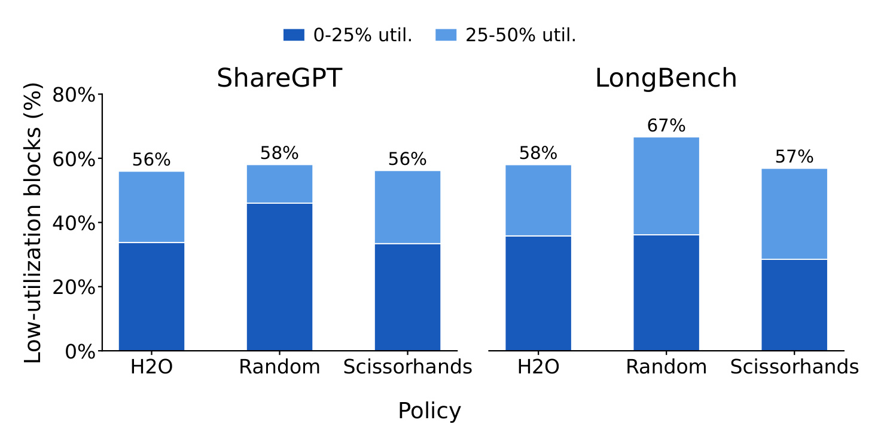
Figure 1 是整篇论文的问题证据，不是 vToken 自身的收益图。作者在 Llama-3.1-8B、16K token 子集、batch size 16 下，对 ShareGPT 和 LongBench 运行 H2O、Random、Scissorhands。柱子表示“利用率不超过 50%”的已分配 blocks 占比，深蓝为 0–25%，浅蓝为 25–50%。六个组合的总柱高均在 56%–67%，即多数物理 blocks 连一半都没装满；论文据此报告 $F$ 约为 40%–60%。更关键的是这一现象同时出现在结构化的 H2O/Scissorhands 和更分散的 Random 中：政策会影响空洞分布，但不会自动赋予 block runtime “回收局部空洞”的能力。因此图支持的结论是“存在普遍碎片”，还不能单独证明重打包后一定能提吞吐；后一点需由配对 serving 实验补上。
1.3 缺的是 runtime 边界，而不是又一种淘汰打分器
若没有中间抽象，每引入一种 token eviction policy，开发者都要在 scheduler 里计算重要性、挑选 victims，再把 token 语义翻译成 block action，同时维护 attention slot mapping 与搬迁同步。要么等到整个 block 都空才回收，牺牲策略的细粒度效果；要么自己把 live tokens 搬出去，将 policy 逻辑与 block allocator 、worker 以及 CUDA 时序紧紧耦合。作者的经验数据是，直接把 H2O 一类策略接入 vLLM 需要跨 4–6 个核心文件修改 500 行以上代码，且每增一种 policy 都会重复相似工程。
vToken 因此不试图取代 H2O 或 Scissorhands，也不宣称取代 PagedAttention。它要补的是介于两者之间的“逻辑 token 存活性—物理 block 布局”运行时边界：向上提供策略不需理解 blocks 的 token API，向下保留原 allocator/kernel 的块化组织，只在内存压力下延迟、批量地重打包存活 KV。这也意味着它的有效区间很明确：无 KV 压力时 native full-KV path 仍更简单，vToken 是压力触发扩展，不是所有请求的常驻替代路径。
理解这个问题还要区分三种常被混在一起的“节省”。第一种是淘汰算法的逻辑节省，它回答保留多少 token，代价是可能损失下游任务质量。第二种是 allocator 的外部碎片管理，PagedAttention 通过非连续物理块与按需分配已经做得很好。第三种才是 vToken 针对的内部碎片：allocator 看到 block 仍“在用”，但里面的死 token 已没有任何 attention 价值。只报“保留 token 减少多少”无法证明后两种收益，只报“已分配显存不变”也不能反证 token eviction 无效。论文之所以需要 Figure 7 同时给 utilization 和 retained blocks，就是为了把这三层区别用物理证据重新接起来。
从操作系统视角看，vToken 借鉴的不是“再做一层页”，而是用虚拟地址空间稳定语义、允许物理位置在后台改变的原理。vAttention 一类方法在 CUDA VMM 的 page 粒度虚拟地址，可避免专用 paged-attention kernel，但 page 里由 token eviction 留下的局部空洞仍不会自动消失。PagedEviction 反过来要求 policy 按 page 边界淘汰，能容易回收，但会限制 H2O 这种重要性顺序与 page 无关的现有策略。vToken 选择在二者之间保持 policy page-agnostic，将对齐责任下沉给 runtime。所以论文的可迁移问题不是“能否复制一个压实 kernel”，而是其他 serving engine 是否也有可变 slot mapping、block allocation/free hooks 和异步 copy 依赖这三类能力。
该问题还包含一个时间维度。即使某一时刻 $F$ 很高，立即搬迁也未必值得：请求可能很快结束，释放整个序列；候选 blocks 中的 live tokens 可能太多，压实后净减块为零；或 GPU 正处于 attention 带宽高压区，copy 的短期代价大于未来收益。因而完整任务是“按 token 维护存活性，按 request 规划重定位，按全局压力选择时机，按 decode stage 发起搬运”。如果少了任何一层，都可能出现逻辑正确但物理不盈利，或物理节省但延迟退化的情况。
从调度器视角，这还是 admission control 的可观测性问题。传统 free-block 计数只反映还能立即分配多少整块，看不见已分配块内部未来可兑现的空洞；反过来，逻辑保留率只反映 policy 决定，又高估了当前能立刻复用的容量。vToken 必须同时维护已兑现 free blocks、可压实 source blocks、搬迁所需 headroom 与在途计划，才能让调度器区分“真的没空间”和“有空间但尚未回收”。这个区分决定新请求应被拒绝、排队还是等待一次短回收周期，也解释了为何本文是 serving runtime 工作，而不是离线张量压缩技巧。
对大模型与推荐交叉负载，这个问题比普通短对话更容易暴露。生成式推荐可能同时带有长用户历史、候选内容证据和多轮解释，请求长度与输出长度差异大；一部分用户序列可能很早被判定为低重要性，另一部分仍需长时间保留。在这种长尾混合批次中，仅有 token eviction 会让空洞随请求寿命累积，最终使调度器看到“逻辑预算足够，物理 blocks 不足”的矛盾。但用户历史中又可能包含稀有却决定性的偏好 token，因此 vToken 只能提供回收机制，不能替上层策略承诺偏好识别正确。这正是为何论文必须把 runtime 正确性与 eviction 任务质量分开评价。
2. 方法
2.1 虚拟化边界与 Token Table 逻辑地址空间
vToken 先确立一个责任合约。边界上方的 policy 只处理逻辑 token ID：新 token 产生时通知 runtime，重要性足够低时标记该 token 已死。它不回答 token 在哪个 block、是否已能释放、应搬到哪个目标 slot。边界下方的 runtime 则拥有逻辑到物理映射、slot translation、回收时机、异步 copy 和 block free。核心分离是“判定 token 已死”与“立即释放它所在的物理存储”不再是同一步，因而回收可以延迟、批量并与解码重叠。
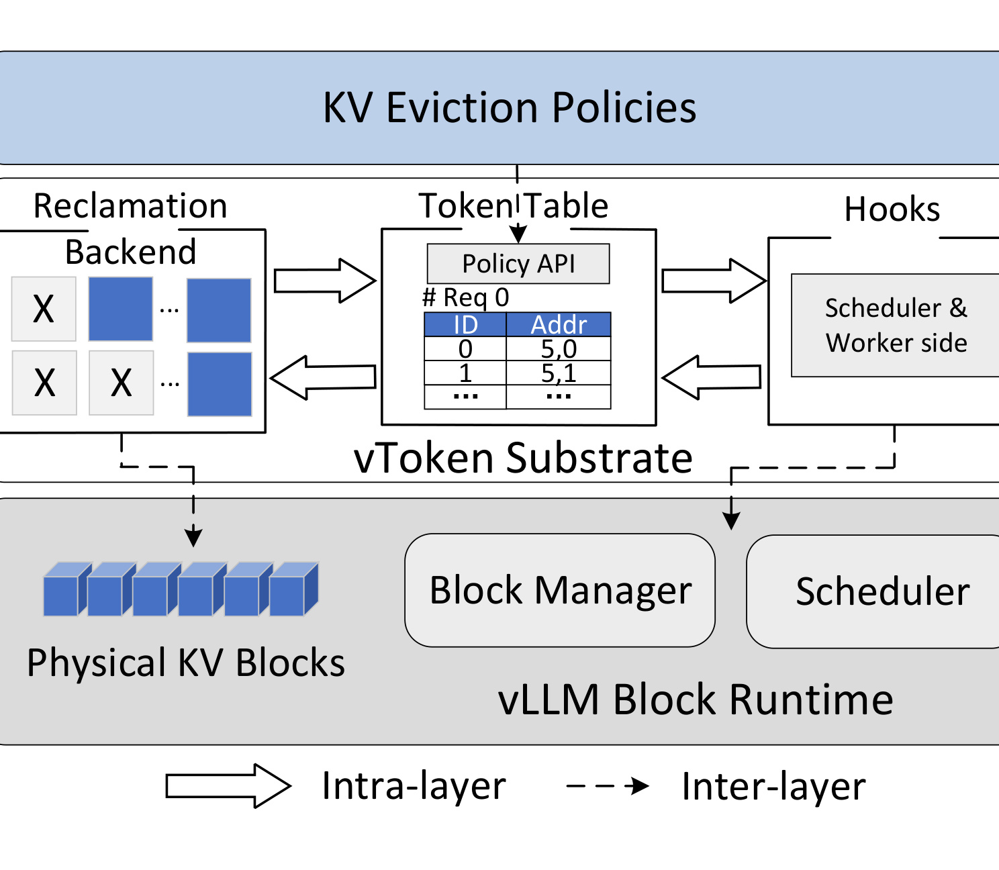
Figure 2 从竖向上把这个合约分为三层。最上层的 KV Eviction Policies 通过 Token Table Hooks 表达逻辑决定；中间 vToken Substrate 同时包含回收 backend、单请求 token table 与 scheduler/worker side hooks；最下面仍是 vLLM Block Runtime 的 Scheduler、Block Manager 和 Physical KV Blocks。实线表示同层数据或控制交互，虚线则表示向原 runtime 插入的跨层钩子。这种组织直接对应论文的三个挑战：token table 同时表示逻辑存活与物理占用，解决 dual-view consistency；reclamation backend 把开销放到碎片真正可回收的压力点；scheduler/worker hooks 在下一次 attention 前刷新 slot 并插入 event 依赖。图中没有把 attention kernel 改画成新模块，正是因为论文刻意把虚拟化放在 kernel 外部。
Token Table 是该边界的中心元数据。每个请求维护一份表，对每个逻辑 token ID 记录 $(block\_id,offset)$ 与 liveness bit。evict_token(req_id, token_id) 只修改存活位，并把 token 从后续 slot mapping 排除，此时物理 KV 可以仍在原地；sync_new_tokens(req_id, block_ids, total_len) 为追加 token 登记连续逻辑 ID 和当前 block 位置；apply_moves(req_id, moves) 在 copy 完成后原子更新新位置。正经表放在 CPU 以保持简洁，GPU 侧缓存 slot translation array；请求只追加时增量更新，淘汰、relocation 或 layout reconciliation 等结构变化才全量刷新。复杂度是每序列 $O(L)$，不随层数或 KV 张量元素数倍增；16K token 、16 字节每项时约 256KB，低于评测 7B/8B 模型约 2GB FP16 KV 的 0.1%。
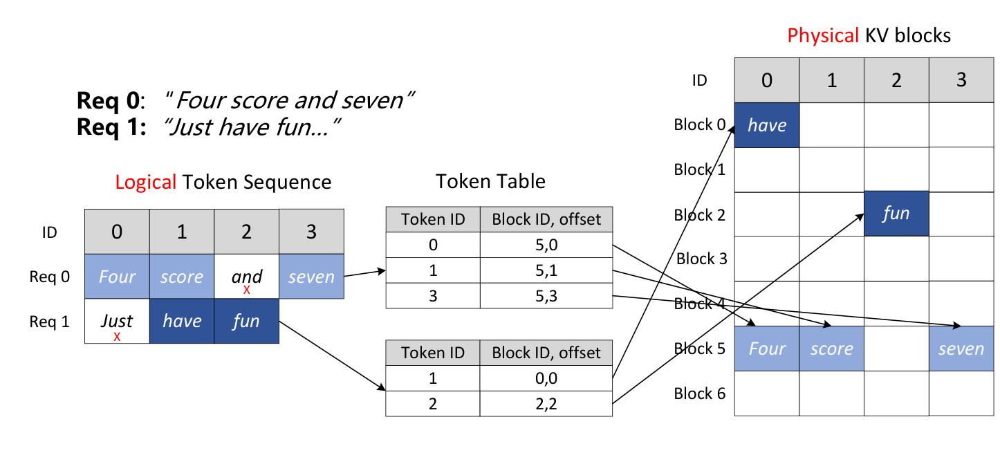
Figure 3 用两个短请求展示“逻辑顺序稳定、物理位置可变”。Req 0 的逻辑序列是 Four/score/and/seven，其中一个 token 被淘汰后，存活的逻辑 ID 仍保持原有身份，表内却可把它们指向 block 5 的不同 offsets；Req 1 的 token 可以落在 block 0 和 block 2，不要求物理连续。右侧 Physical KV blocks 中空洞与存活单元交错，箭头终点则是 attention 真正要访问的 block/offset。这张图帮助排除一个容易误解的方案：vToken 没有为每个 token 做 GPU malloc，也没有让 kernel 在 token table 上进行不规则追踪；它在 input preparation 阶段一次性将存活逻辑 token 翻译成 slots，attention 仍消费原有格式。代价是每次结构变化后必须严格保证新表与已搬迁 KV 内容同步可见。
2.2 可回收性判定、headroom admission 与 relocation planning
逻辑淘汰发生后，vToken 并不每删一个 token 就搬一次 KV。ReclamationManager 用逐 block 的 live count 增量维护 $F$，将机会检查摊销到多个 scheduling iterations 上，并对规划尝试限频。默认触发条件包含：
符号解释：$F$ 是全局 block 内浪费率，$\theta_F$ 是可调阈值，原型根据敏感性实验选 0.25。但 $F$ 过阈值还不够：必须有足够多的低利用 source blocks，free block 数接近低水位，且调度器仍能从同一 KV budget 内预留有界的 evacuation headroom。这块 headroom 是 out-of-place copy 的临时目标空间，不是额外显存池。当剩余 blocks 已很少，scheduler 要先对新请求施加 admission backpressure，否则最后的自由 block 一旦被新请求吃掉，压实反而无处启动。
规划保持 request-local。对一批候选 source blocks，设其存活 token 总数为 $T_{\mathrm{live}}$，所需目标 block 数和净收益条件为：
符号解释：$S$ 是每 block 容量，$N_{\mathrm{dst}}$ 是放下全部 live tokens 所需的目标块数，$|B_{\mathrm{src}}|$ 是待疏散化的源块数。只有源块数严格大于目标块数时，当轮才能净释放 blocks；否则缩小候选集或延后规划。通过入选的 live tokens 尽量保持逻辑顺序，顺序填满每个 destination block，move 条目携带 token ID、source block/offset 与 destination block/offset，供 copy 完成后提交。
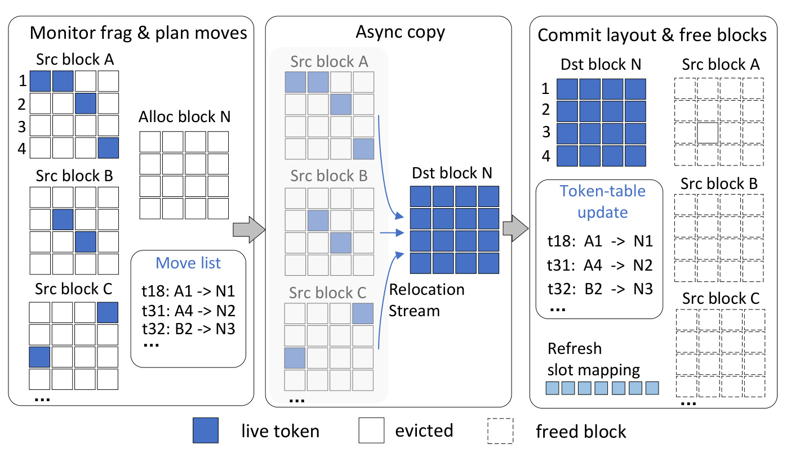
Figure 4 从左到右给出一次真正回收的三个可观察状态。在“Monitor frag & plan moves”阶段，source A/B/C 里蓝色 live token 与白色已淘汰空洞交错，planner 分配新 block N 并生成 t18:A1→N1 类 move list。中间阶段把蓝色单元重排到 destination N，此时 source blocks 还不能提前释放，因为旧 slot mapping 可能仍被当前 step 消费。右侧“Commit layout & free blocks”先更新 token table，刷新 slot mapping，再把已腾空的 source 放回 free pool。虚线 block 表示已释放的物理容量，而不是仅在逻辑上标记无效。这个顺序实现了两个安全要求：新布局未完全可见前不重用源空间；只有能释放更多 blocks 的计划才值得支付拷贝代价。
2.3 分阶段异步拷贝、slot remapping 与 Scheduler 钩子
一个 decode step 的 GPU 资源特征并不均匀：attention forward 需要读取大量 KV，通常受 HBM 带宽限制；FFN forward 更偏计算密集；sampling、scheduling 和下一步预处理等 post-forward 工作则以 CPU 逻辑为主，GPU 利用较低。如果只是把 copy 放到另一条 CUDA stream，却让它与 attention 同时跑，两者仍会争抢 HBM，于是“异步”会变成隐性关键路径回归。vToken 的 stage-aware 排程是在当前 forward 返回后才向专用 relocation stream 发起 copy，让搬运与 sampling/scheduling/next-step preprocessing 重叠。
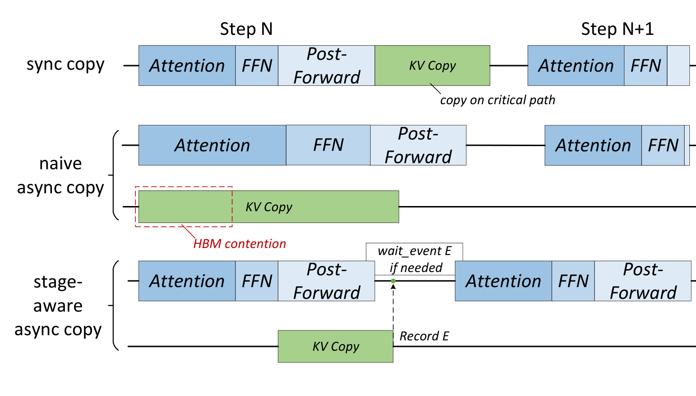
Figure 5 用三条时间线说明选择 launch 时机比“有没有单独 stream”更重要。最上方 sync copy 把 KV Copy 放在 Attention 前，直接拉长当步关键路径。中间 naive async 虽然不停 CPU，copy 却与当步 Attention 重叠，图中红色虚线框标出 HBM contention。最下方 stage-aware 路径等 forward 结束再拷贝，并在 copy stream 记录 event $E$；Step N+1 的 attention 前才在主 stream 插入 wait_event E。如果 post-forward 期间已搬完，这道 GPU-side fence 就不增加实际等待；即使未搬完，CPU 也不做全局同步。图还揭示了正确性要点：当前步 slot mapping 在 copy 发起前已经被 forward 消费，因此 post-forward 更新不会篡改已在运行的 attention；下一步则在 event 可见性确保后使用新 slots。
搬迁后，vLLM 原先从 block list 直接计算 slot 的方式必须改为查 Token Table：
符号解释：$t$ 是逻辑 token ID，$S$ 是 block size，$\mathrm{block\_id}$ 和 $\mathrm{offset}$ 是搬迁后最新物理位置，$\mathrm{slot}$ 是 attention kernel 消费的线性索引。该查询发生在 input preparation，不进入 attention kernel 内循环。Scheduler 侧钩子预留 evacuation headroom，worker 侧钩子评估回收、发射 copy 并提交逻辑布局，pre-attention 钩子插入 event 依赖。CUDA Graph 不需要关闭或重捕获：KV tensors 和 graph-captured input buffers 的地址保持稳定，只是 replay 前覆写可变 slot-mapping buffer，relocation 本身在 captured graph 之外运行。
2.4 正确性不变式与 vLLM 实现范围
论文用四个不变式把“后台搬迁不破坏解码”变成可检查合约。I1 token conservation 要求搬迁前后 active logical IDs 及其 K/V 内容完全保留；I2 unique mapping 要求每个 active token 恰好指向一个 block/offset，每个 occupied slot 最多被一个 token 引用；I3 pre-attention visibility 要求任何新 slot 只在对应 copy event 完成后才被 attention 读；I4 layout-aware planning 要求计划基于一致快照，同一请求不叠加未完计划，且新 block 数必须严格小于源 block 数。I1/I2 在每次 relocation 中在线检查，I3 由 CUDA event 拓扑和单元测试保证，I4 由 planner 的盈利性与隔离 gate 强制。
原型基于 vLLM 0.18.0 和 PyTorch 2.10.0，实体组件是每序列 TokenTable、ReclamationManager 和使用 non-blocking CUDA stream 的 CUDACopyEngine。Policy 适配层只做 SyncNewTokens、SelectVictims 和 EvictToken，后面 BuildSlotMapping、ReclaimAsync 和 Decode 由共享 runtime 完成。据论文统计，新 policy 的接入范围从 block-native 路径的 4–6 个文件、500+ LOC 降到 1–2 个适配文件、少于 50 LOC。这是工程边界的证据，不是对 policy 算法质量的改进。当前实现仅针对单机单 GPU decode fast path、一个 runtime KV cache group，shared-prefix blocks 保守排除在 relocation 外；因此多 GPU、跨设备 KV move 和多 cache-group 仍是抽象可延伸但原型未验证的区域。
3. 实验结果
3.1 配对口径与内存效率
评测在单张 NVIDIA H100 80GB 上完成，主要模型是 Mistral-7B 与 Llama-3.1-8B，容量前沿额外检查 Qwen2.5-14B；workloads 为 ShareGPT 和 LongBench，淘汰策略为 H2O、Scissorhands 和 Random。Native vLLM 不做 token eviction；Naive-Evict 和 vToken 使用完全相同的 prompts、模型、解码设置、policy 决策与内存预算，唯一差异是前者关闭物理 reclamation，后者启用 token table 与异步重打包。所有实验启用 CUDA Graph，temperature=0，除容量前沿外 gpu_mem_util=0.90。这种 paired design 能把“哪些 token 被删”的算法影响与“删后空洞能否释放”的 runtime 影响分开。
这一设计有三个阅读要点。第一，Native vLLM 是低压 full-retention 参照，不能直接用来判断 token eviction 算法在同等质量下是否更好，因为它根本没有丢 token。第二，Naive-Evict 才是识别系统机制的关键基线，两个变体要共用一份 victim trace，否则少占 blocks 可能只是 vToken 删了更多 token。第三，memory utilization、retained blocks、throughput/p95 和 capacity frontier 回答不同层级：前两者是布局机制，中间两者是服务质量约束，最后一个是统一物理预算的可行性。只有它们指向同一方向，才能将“压实空洞”写成端到端 serving 收益。
论文的实验控制也有几个不应略过的边界。首先，原型所用 vLLM 版本要求 block size 至少为 16，所以敏感性扫描没有 4/8 这类更小 blocks；这与论文背景中对“缩小 block 会增加元数据和搬运开销”的定性判断一致，但不是针对小于 16 的直接实测。其次，capacity frontier 的可行点吞吐取三次平均，而论文并未将每张图的完整方差与置信区间都交付在主文。因此边界“能不能装下”的结论较硬，具体 throughput/p95 改善的统计稳定性则还应通过原始运行日志复核。最后，主结果对策略类型和 workload 都有覆盖，但平均数不能替代分组解释：Random 制造更分散的 live tokens，本来就给 compaction 留出更大上限，与 H2O 的较小收益不应被简单平均后隐去。
复现实验时还应把一次性峰值和稳定窗口分开报告。若只截取压实刚完成后的 block 数，可能高估长期收益；若只在固定并发下平均吞吐，又可能掩盖回收触发时的尾延迟尖峰。更稳妥的记录应包括每步 free blocks、fragmentation、在途搬迁字节、planner 时长、event 等待和 admission queue 长度，并以请求到达、首次触发、回收提交、重新入场四个时点对齐。这样才能确认吞吐提升来自释放后的额外并发，而不是测量窗口、输出长度或请求完成顺序变化造成的偏差。
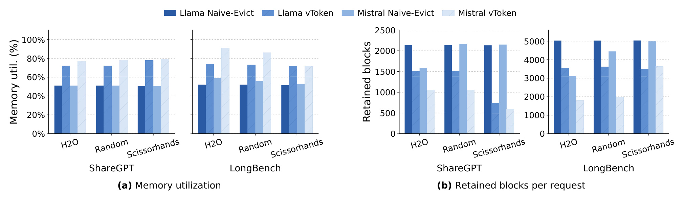
Figure 7(a) 用“存活 tokens/已分配 block 容量”衡量 memory utilization，不是 GPU 总显存占用率。图中无论 ShareGPT/LongBench，还是 H2O/Random/Scissorhands，vToken 柱都高于 paired Naive-Evict；论文汇总为 Llama-3.1-8B 平均提高 21.88%，Mistral-7B 提高 21.67%。Figure 7(b) 更贴近 admission 的操作指标：每请求保留多少物理 blocks。vToken 相对 Naive-Evict 减少 27.2%–72.3%，而这个数字变化的前提是 token-level victims 不变。两张子图必须合读：利用率上升证明空洞被填平，retained blocks 下降证明已腾空块真正回到 allocator，因而不是仅在 metadata 上美化了占用率。Random 会把 live token 打散到更多 blocks，因而减块收益更明显；H2O 的保留结构更集中，但仍稳定受益。
3.2 SLA 约束下的可持续吞吐
内存节省只有转成更好的 serving operating point 才有意义。作者对每个变体做 closed-loop concurrency scan，用 Naive-Evict 在参考并发 8 的 p95 延迟定义共享上限：
符号解释：$C_{\mathrm{ref}}=8$ 是设定 SLA 的参考并发，$p95_{\mathrm{Naive\text{-}Evict}}$ 是配对基线的 95 分位延迟，1.05 给出 5% 波动余量。在不超 SLA 的所有测试点里，$C_{\mathrm{sel}}$ 选吞吐最高者，它不一定是扫描中的最大并发。这一口径防止把“能硬塞更多请求”误当成“服务质量可接受的更高吞吐”。
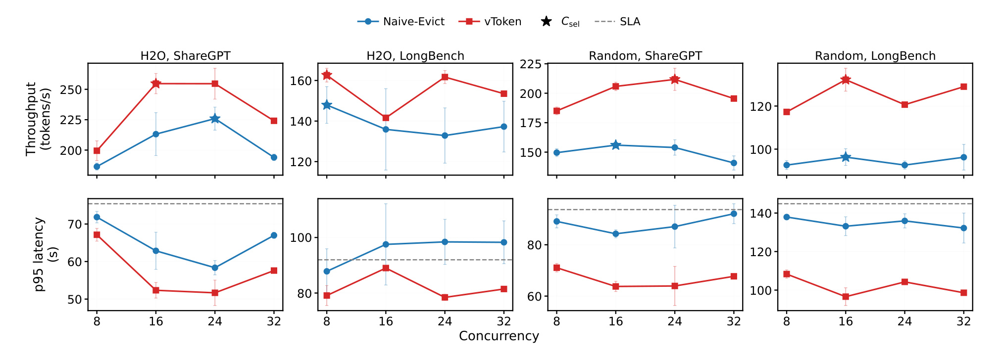
Figure 8 的每一列对应 H2O/Random 与 ShareGPT/LongBench 的一个组合，上排是 throughput，下排是 p95 latency，星号是各变体在 SLA 下选中的 $C_{\mathrm{sel}}$。红色 vToken 通常能在更高并发仍保持较低 p95，因而可行吞吐前沿向上移动；Mistral-7B 的汇总收益是选中可行吞吐提高 9.9%–37.3%，p95 降低 9.9%–27.5%。Llama-3.1-8B 的六个 workload-policy 组合没有全部画在该图中，正文汇总为吞吐平均提高 18.9%，p95 平均降低 14.7%。图也说明收益与空洞分布有关：Random 的扩展更大，H2O 较小但为正。需注意，论文正文另报告 Scissorhands 在跨 Mistral/Llama 的所选点上提高 33.3%–103.7%，这与摘要“最高 1.37倍”使用了不同的组合/汇总表述。在没有原始日志时，不应把两者合并成一个无条件最大值；本笔记的头条口径保留摘要可直接核对的最高 1.37倍。
3.3 统一 block budget 下的 active-KV 容量前沿
容量实验不把“请求在 admission queue 等待”当作可行，而要求目标数量的活跃请求能同时装进 active KV block pool。对活跃上下文长度 $L$、block size $B$、并发 $C$ 和淘汰后保留 token 数 $R(L)$，全保留与理想紧凑的 block 需求分别为：
符号解释：$C$ 是同时常驻的请求数，$L$ 是当前上下文长度，$B$ 是 block 容量，$R(L)$ 是 eviction policy 在长度 $L$ 时保留的 token 数。Naive-Evict 因空洞被锁在部分存活 blocks 中，物理需求接近前者；vToken 把 live tokens 集中后，向后者靠近。作者使用 Llama-3.1-8B、LongBench、H2O 和 output length 12288，vToken 的 evacuation headroom 也计入同一 usable block pool，不允许用额外预算制造扩容。
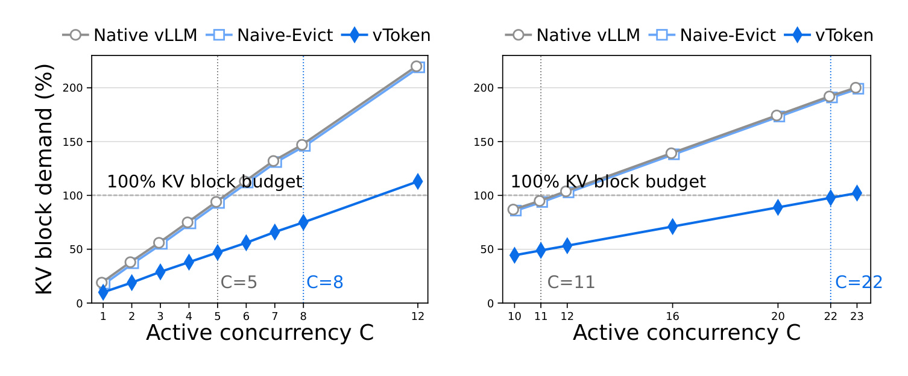
Figure 10 左图是 gpu_mem_util=0.35，H100 提供 5427 个 usable KV blocks；一个全保留请求需 1020 块，H2O 后理想紧凑只需 512 块。100% 横线是真实预算边界，Native 与 Naive-Evict 在 $C=5$ 后超预算，vToken 到 $C=8$ 仍可行，最大并发提高 60%；边界点 $C=8$ 的吞吐为 180.3 tokens/s，接近其 $C=5$ 峰值 203.2 tokens/s，表明扩到边界时是渐进降级而非突然崩溃。右图把预算提到 11519 块，Native/Naive 可行到 $C=11$，vToken 到 $C=22$，给出 2倍边界扩展。蓝线不是通过改变 admission 定义绕过 100% 线，而是在相同分母下降低每请求物理 block 需求。论文还在 Qwen2.5-14B、output length 8192、gpu_mem_util=0.50 上得到 Native/Naive $C=3$、vToken $C=6$ 的边界，说明扩展不仅出现在 8B 模型。
在 0.35 预算下，$C=6$ 的 full-retention 理论需求是 6120 块，已经超过 5427 块物理池，所以 Native 在 5 之后不可行完全符合预算算术。Naive-Evict 虽逻辑上只保留约一半 tokens，但空洞分散后的物理需求仍接近 1020 块每请求，因而和 Native 一起在 5 封顶。vToken 并没有达到理想 512 块的完美下界，因为还有对齐、headroom、新增 token 与时序差异；但它已足以把边界推到 8。这个差别对复现很关键：应同时记录“理想紧凑下界”和“实测边界”，如果只验证最大并发，就无法判断中间差距来自 planner 保守、布局不可压缩还是调度拒绝。
3.4 间接寻址、planner 与异步 copy 的代价
作者先做 indirection-only ablation：安装 vToken hooks，但关闭 eviction 与 reclamation，只在结构变化时刷新 translation。在 $C=16$ 和 $C=48$ 两点，throughput 与 p95 相对 Native vLLM 的变化都小于 1.0%。这个结果支持“稳态 slot indirection 近乎免费”，但不能推导“回收路径免费”；后者包含机会判断、move planning、host launch、table rewrite 和 GPU copy。
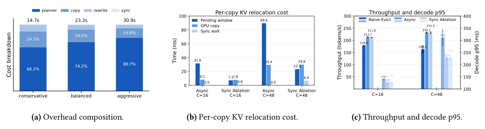
Figure 11(a) 将 100 次 profiling 的 CPU-observed 开销拆为 planner、copy launch/accounting、token/block-table rewrite 和 sync。堆叠柱表明 planner 一直是大头，且从 conservative 到 aggressive 回收级别，机会检查的占比上升，这把优化焦点指向索引和批量判断而非单纯改 copy kernel。Figure 11(b) 比较普通 async 和 force-sync ablation：async 路径的 copy 在多个 decode steps 的 pending window 里完成，显式 sync wait 为 0；force-sync 则暴露约 29ms 级 CPU 阻塞，验证了 event 重叠确实消除 host stall。Figure 11(c) 还保留了一个重要限制：异步路径在 $C=16/48$ 的 throughput/p95 明显好于 Naive-Evict，又接近 force-sync 的 GPU 结果，但 copy kernels 仍会与 decode 分享 GPU 资源。因此它避免的是显式等待和 attention 阶段直接 HBM 冲突，不是把数据搬运成本变成零。
3.5 敏感性、prefix cache 与生成稳定性
敏感性实验在 H2O 下做 one-factor-at-a-time 扫描，同时观察 normalized retained KV capacity、throughput 和 p95 latency。容量指标等于 retained blocks 乘 block size，再对每个 model-dataset 默认配置归一化，避免不同 block size 下只比较块数带来偏差。
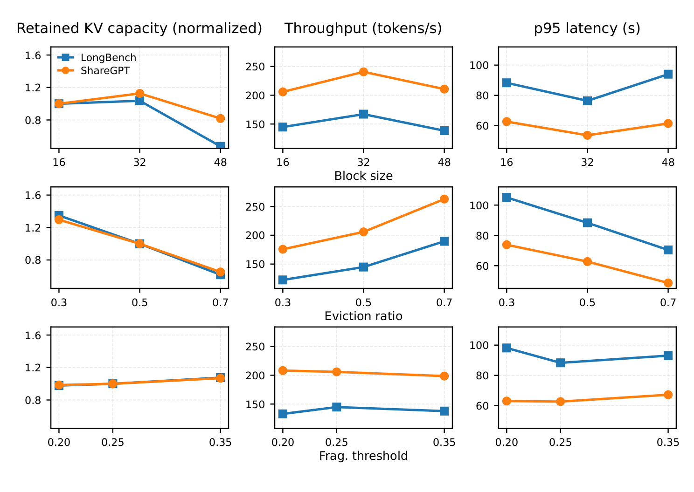
Figure 12 三行分别扫 block size 16/32/48、eviction ratio 0.3/0.5/0.7 和 fragmentation threshold 0.20/0.25/0.35，三列分别是 retained capacity、throughput 和 p95，蓝/橙对应 LongBench/ShareGPT。第一行表明 block size 32 在两个 workload 上取得最高吞吐和最低 p95；48 虽能使归一化 retained capacity 更低，性能却变差，所以“把 block 改大”不是代替 token-level reclamation 的免费方案。第二行的 eviction ratio 从 0.3 到 0.7 时，retained capacity 明显降低，吞吐上升、p95 下降，说明 vToken 能将更积极的逻辑淘汰转化为物理收益；但淘汰后任务准确性是 policy 的责任，本图不证明 0.7 在语义质量上最优。第三行对 threshold 相对平滑，表明系统不依赖极端精细调参；阈值主要改变“何时回收”，eviction ratio 才改变“有多少洞可回收”。
生产 serving 常依赖 prefix caching，vToken 的当前策略是排除 shared-prefix blocks，但允许私有 suffix blocks 进入 reclamation。论文用 8K shared prefix、8K private suffix 的合成 H2O workload，扫 sharing degree 1/2/4/8，并始终与开启 prefix cache 的 Naive-Evict 比较，因而收益不是两个变体 hit rate 不同造成的。
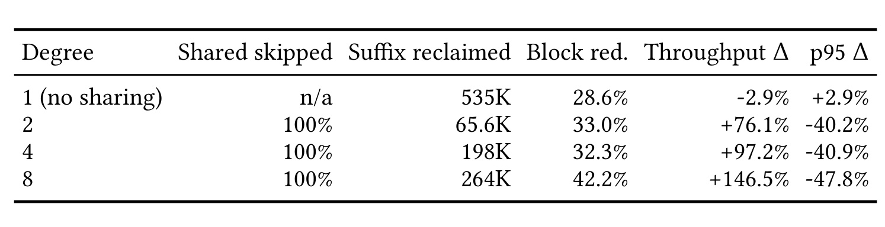
Table 1 的 Shared skipped 列是正确性边界：sharing degree 2/4/8 均为 100%，即无共享前缀候选被错误搬运；Suffix reclaimed 则证明保守并不等于全部放弃回收，不同 sharing degree 仍回收 65.6K、198K 和 264K 的私有 suffix 单元。相对同样开启 prefix cache 的 Naive-Evict，retained blocks 降低 28.6%–42.2%；degree 2/4/8 的 throughput 分别增加 76.1%、97.2%、146.5%，p95 分别降低 40.2%、40.9%、47.8%。degree 1 没有共享复用，throughput -2.9%、p95 +2.9% 呈现小幅开销，也提醒我们不能只报高 sharing 点。这张表支持的是“保守的私有 suffix 回收可与 prefix cache 共存”，并未验证 shared block 的 copy-on-write 搬迁；后者只在 Discussion 作为可扩展方向。
最后，作者对每次 relocation 前后的有序 active token IDs 与其 K/V tensor 内容做 hash，检查无 token 丢失或重复，且 Token Table 引用的每个 block/offset 都有效。所有已评测 workload-policy 组合的 I1/I2 检查通过。为了把低层状态保真与最终文本表现区分开，论文又对 Llama-3.1-8B/ShareGPT 的 144 对 temperature=0 生成进行配对质量检查。
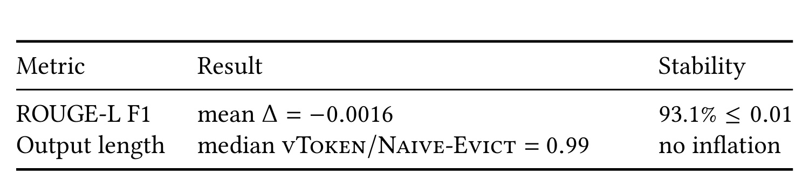
Table 2 只有两行，但它辨认了两种不同失败。ROUGE-L F1 配对平均差为 -0.0016，93.1% 的生成对差异不超过 0.01，表明引入 token table 与 relocation 后没有观察到显著的额外文本漂移；中位 vToken/Naive-Evict 输出长度比为 0.99，排除“质量相似只是因为系统性生成更长”的一个简单替代解释。证据边界同样重要：对照双方使用相同 token eviction decisions，所以该表验证的是“物理搬迁不额外改变已保留 KV”，不是“H2O 删 token 对所有下游任务都无损”。144 对 ShareGPT 样本也无法替代 LongBench 长上下文任务准确性、代码生成与工具调用一类更强的应用评测。
4. 总结
4.1 我的判断与工程启发
vToken 最有价值的不是“又做一次 KV compaction”，而是把 token eviction policy 和 block-managed runtime 之间的缺口定义为可复用虚拟化边界。它的证据链条基本完整：Figure 1 证明逻辑淘汰下的物理碎片，Figure 7 证明同一 victim decisions 下块数确实减少，Figure 8/10 证明减块可转化为 SLA 吞吐和 active-KV 容量，Figure 11 与 Table 2 再检查开销和正确性。对系统论文而言，这比只报一个 tokens/s 结果更有说服力。
我更看重它对“责任归属”的处理：policy 可以快速迭代重要性准则，runtime 统一承担物理布局、同步与盈利性判断，kernel 继续消费稳定 slot buffer。这种分层不会自动带来更高模型质量，却能减少每个新 policy 重复修改 block manager 与 worker 时序的风险。当系统同时接入 H2O、基于持续重要性的策略和业务定制策略时，“少于 50 LOC 的 adapter”带来的可维护性可能比单一次跑分更重要。但这一判断还需等代码开放后核对，特别是各 policy 是否真的只需提供 victims，而没有隐藏在评分信号、scheduler 快照和 worker 布局中的额外耦合。
对生成式推荐、长序列用户建模或 agentic recommender，可迁移的思路是把“内容应否保留”与“存储应如何排布”分开：上层可用用户兴趣强度、时效性或 attention 证据决定逻辑存活，下层再在统一边界里做物理重排。但落地时不应直接把默认 $\theta_F=0.25$ 或 eviction ratio 复制到线上；先要分清自己是否真的受 active-KV block pool 限制，再用同一 token decisions、同一 memory budget、同一 SLA 完成 paired 对照。如果业务大多数时间尚无 KV 压力，native path 更可能是正确默认选择。
一个可执行的上线决策门槛应至少同时要求：线上确有大量低利用 blocks，全保留路径的可行并发已被 KV pool 卡住，该业务的 eviction policy 已有独立质量验证，且 async copy 在实际到达过程下不会把 p99 推出 SLA。只有第一条成立但其他条件缺失时，应先修正 policy 或调度瓶颈，而不是把所有碎片都立即视为应搬迁对象。
4.2 局限与后续跟进
当前证据至少有以下局限：
- 基线范围有限。 主要口径是 paired Naive-Evict，它很适合隔离“有无物理 reclamation”，却不是与所有 KV 量化、混合精度 page manager、page-aligned eviction 或跨设备 offload 的全面竞争性比较。
- 硬件和 runtime 外推不足。 实验是单 H100、单节点、单 GPU decode fast path 和一个 KV cache group，尚未实证 tensor parallel 下的 shard-local block IDs、跨设备 copy 和多 cache-group 布局一致性。
- 策略质量不在该层解决。 vToken 保证搬迁不再添加损失，却不保证 H2O/Random/Scissorhands 的 victims 对代码、RAG、超长推理或安全关键 token 都是正确的；Table 2 只覆盖 144 对 ShareGPT 生成。
- prefix cache 处理偏保守。 当前完全跳过 shared-prefix blocks，只回收 private suffix，copy-on-write 是讨论中的可能扩展，还没有收益与额外 copy 代价的实验。
- 异步重叠仍有资源代价。 planner 机会检查是主要 CPU 开销，copy 避免了显式 sync 却仍与 decode 共用 GPU 资源；不同请求长度和到达过程下的 tail latency 还需线上型压力评估。
- 开源复现状态未核验。 论文报告 vLLM 0.18.0/PyTorch 2.10.0 原型和代码量，但本轮没有找到独立公开仓库或可直接运行分支，因而数字仍需等代码与日志开放后复核。
后续最值得跟进的是：
- 先复制配对实验而不是只复制头条吞吐。 在相同 victim trace 与 KV budget 下同时核对 retained blocks、planner/copy 开销、SLA 点和 hash 不变式，并弄清正文 Scissorhands 103.7% 与摘要 1.37倍的口径差异。
- 将虚拟化边界扩到多 GPU 与多 KV groups。 重点检查 TP shards 的 relocation event 是否需要更强协调，以及 group-specific placement arrays 会不会使元数据和 slot refresh 开销放大。
- 与 KV quantization/compression 做正交组合。 vToken 改变活 token 的物理排布，量化改变每个单元的体积；两者理论上可叠加，但 mixed-precision pages 、copy bandwidth 和错误累积需要共同评测。
- 补上业务质量与到达过程。 对推荐/RAG/Agent 请求分布检查 token eviction 的任务损失、prefix sharing 分布、p99 延迟和 burst admission，才能判断压力触发路径是否值得在生产常驻。